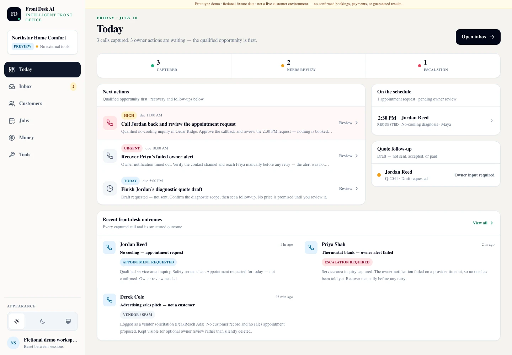

Job — know what to do first
The owner's desk, in priority order
Today opens on the count that matters — what was captured, what needs review, what has escalated — and then lists the actions themselves with a due time and a Review control on each one. The qualified opportunity is deliberately first.
- Captured, needs-review and escalation counts across the top of the day
- Next actions carrying an explicit priority and a due time, each opening for review
- An appointment request held as “requested, pending owner review” rather than booked
- A quote follow-up shown as a draft that has not been sent, accepted or paid
Boundary The recommendation is a recommendation. Front Desk creates or updates a structured opportunity; it never issues a binding quote, never confirms an appointment the customer merely asked for, and never commits you to work.

Fictional-data product capture from the same private synthetic-data rehearsal. The failed owner alert is visible, not hidden. When the notification to the owner did not complete, the inquiry stayed preserved and became an urgent recovery task with a human named on it — the escalation is a first-class item on the desk.